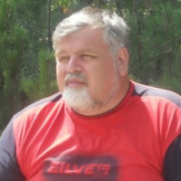
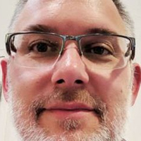
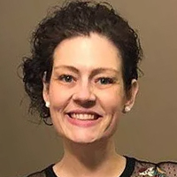

Возраст не является препятствием для жизни! 109-летний кардиолог раскрыл секрет своего долголетия и отличного здоровья.
Доктор Росси утверждает, что секрет долголетия кроется в кровеносных сосудах: если они здоровы и чисты, вы можете прожить до 120 лет и даже больше, чувствуя себя абсолютно здоровым. Кардиолог полностью подтверждает это заявление.
Нашему репортеру удалось взять интервью у доктора Росси, который рассказал, как он продлил свою жизнь, очистив кровеносные сосуды.

Когда доктору исполнилось 109 лет, его поздравил президент Республики.
- Доктор Росси, вы несколько раз говорили, что чистые кровеносные сосуды - это основа хорошего здоровья. Почему?
- Все очень просто. Функционирование органов и аппаратов человеческого тела зависит от качества кровообращения, которое доставляет кислород и питательные вещества внутренним органам, а также собирает углекислый газ и продукты обмена веществ. В детстве, в подростковом возрасте и юности мы больше двигаемся, наши сосуды новые, эластичные и чистые, а органы получают максимальное питание. С другой стороны, с возрастом мы меньше двигаемся, и наши сосуды начинают загрязняться. Это происходит под воздействием многих факторов, не только вредных (таких как курение, нездоровое питание, плохая экология и малоподвижный образ жизни), но и естественных (например, отложение липидов - процесс, происходящий в каждом организме).
Что значит иметь грязные кровеносные сосуды? Представьте себе трубу, полную ржавчины. Что происходит? Давление воды увеличивается, а вода становится невкусной. То же самое происходит и с кровеносными сосудами: когда на них откладывается холестерин или другие вещества, давление повышается (грязные сосуды - главная причина гипертонии!), кровь наполняется примесями, и кровообращение становится несбалансированным. В результате происходят изменения во всех органах, даже в коже.
Человеческое тело стареет. Если вы будете внимательны и очистите свои кровеносные сосуды, у вас будет шанс прожить как минимум на 20 лет дольше без боли внутренних органов и суставов, а ваш организм будет прекрасно функционировать. Другими словами, очищение кровеносных сосудов может продлить вашу жизнь и здоровье. И это не просто теория. Я рекомендовал этот метод своим пациентам и практикую его сам. Все, кто прислушался к моим советам, увеличили продолжительность своей жизни.
 На этой диаграмме показано, как загрязняются сосуды. Если вы никогда не чистили их и вам больше 40
лет, они содержат много загрязнений. Это может повлиять на ваше здоровье, а возможно, процесс уже
начался.
На этой диаграмме показано, как загрязняются сосуды. Если вы никогда не чистили их и вам больше 40
лет, они содержат много загрязнений. Это может повлиять на ваше здоровье, а возможно, процесс уже
начался.
- Какие заболевания могут вызвать загрязненные кровеносные сосуды?
- Как я уже говорил, поражается все тело. Но в первую очередь страдают органы и системы, непосредственно связанные с кровообращением, то есть сердечно-сосудистая система.
Примеси в кровеносных сосудах могут привести к следующим заболеваниям:
- Атеросклероз. Сосуды перестают работать должным образом: мелкие сосуды полностью закупориваются, а крупные сосуды содержат много холестериновых отложений.
- Ишемическая болезнь сердца. Она вызывается недостатком поступающей в коронарные сосуды крови, который, в свою очередь, возникает из-за загрязнений в сосудах.
- Инсульт. Прекращение притока крови к мозгу вызывает гибель нервных окончаний, что приводит к потере определенных функций.
- Гипертония. Примеси в кровеносных сосудах вызывают сужение просвета и повышение кровяного давления.
- Варикозное расширение вен. Они также появляются внутри тела, а не только на ногах (тревожная проблема для женщин). Геморрой является следствием венозной дилатации.
- Венозный и артериальный тромбоз. Отложения примесей в кровеносных сосудах вызывают образование тромбов и гибель сосудов, что может привести к гибели группы клеток в организме. Если тромб растворяется и попадает в кровоток, может произойти закупорка кровеносных сосудов сердца (остановка сердца), за которой в 70% случаев следует смерть пациента.
Приведенные ниже фотографии показывают, какую опасность для здоровья представляют отложения в клетках крови и насколько они сокращают продолжительность жизни.

Сердце женщины, умершей от остановки сердца

53-летний мужчина, перенесший инсульт. Инсульт приводит к инвалидности ВО ВСЕХ СЛУЧАЯХ, и пострадавшим пациентам требуется особый уход. Причиной является закупорка кровеносных сосудов.

Варикозное расширение вен, от которого страдают многие женщины, также является прямым следствием отложений в сосудах.
Эта проблема распространяется. Сердечно-сосудистые заболевания вызывают в 4 раза больше смертей, чем другие причины. Врачи знают об этом, они знают, что очистка кровеносных сосудов необходима, но по какой-то непонятной причине итальянская медицина пренебрегает этим аспектом. Большинство врачей назначают средства для снижения артериального давления при гипертонии, однако они не предназначены для лечения, а оказывают лишь временный эффект. Кровеносные сосуды должны быть очищены. Кстати, люди старше 35-40 лет уже более полувека практикуют этот метод в США и Азии, где пациенты знают о необходимости очищения кровеносных сосудов. Я все время задавался вопросом, почему это не происходит и в нашей стране?
- Есть ли симптомы, указывающие на наличие отложений в кровеносных сосудах?
- Конечно, они есть. Основными симптомами являются:
- Мигрень
- Нарушения памяти
- Хроническая усталость
- Бессонница
- Проблемы в интимной жизни
- Нарушения зрения и слуха
- Высокое кровяное давление
- Проблемы с дыханием и стенокардия
- Бледность кожи ног
- Боль в мышцах и суставах
Кровеносные сосуды обладают способностью накапливать загрязнения, особенно у пожилых людей. По этой причине следует избегать частого употребления гамбургеров и картофеля фри: после употребления жареной и нездоровой пищи определенное количество холестерина откладывается на стенках сосудов, поражая коронарные артерии, сосуды, увеличиваясь со временем.
- Пожалуйста, расскажите нам свой секрет очищения кровеносных сосудов.
- До недавнего времени процесс очищения сосудов занимал несколько месяцев. Я сам собирал лекарственные травы, искал их на рынке или заказывал через Интернет, и, наконец, использовал их для приготовления чая. Теперь мне больше не нужно этого делать, так как мои коллеги из Института сердечно-сосудистых заболеваний создали хорошее и недорогое средство для очистки сосудов - Opticor. Этот продукт регулирует кровяное давление и лечит гипертонию, очищая сосуды. Поэтому он отлично подходит для нашей цели.
Это средство не содержит химикатов, имеет 100% натуральный состав и содержит редкие целебные экстракты трав и ягод: рапсовое масло, пустырник (обыкновенный), листья оливы, листья и цветы облепихи, экстракт кумквата. Именно поэтому оно так полезно для организма.
Большинство пациентов продолжают спрашивать моего совета по очищению кровеносных сосудов. В последнее время я рекомендую им только этот продукт. Он очень эффективен.
На сайте Института сердечно-сосудистых заболеваний была представлена официальная статистика клинических испытаний, в которых приняли участие около 2 000 пациентов, получавших лечение препаратом Opticor.
Результаты испытаний:
- Нормализация артериального давления через 1-2 дня после приема препарата - 99% пациентов
- Нормализация частоты сердечных сокращений после окончания лечения - 97% пациентов
- Полное очищение кровеносных сосудов от холестерина после лечения - 99% пациентов
- Повышение эффективности лечения хронических заболеваний - 99% пациентов
- Улучшение общего состояния здоровья - 100% пациентов
- Отсутствие каких-либо побочных реакций во время лечения - 100% пациентов
- Сколько стоит Opticor и где его можно приобрести?
- Как вы знаете, пенсия не позволяет покупать дорогие лекарства, именно поэтому я никогда не смогу порекомендовать дорогое средство. Opticor стоит не так уж дорого и предлагается со скидкой до
Это лучшее лекарство для борьбы с высоким кровяным давлением. В результате любой желающий может приобрести Opticor со скидкой -50%.
Подробнее о том, как получить Opticor с доставкой на дом
Чтобы заказать Opticor, вам необходимо:
- Заполните форму;
- Менеджер свяжется с вами для подтверждения адреса доставки;
- В течение 2-5 дней (необходимых для доставки) вы получите Opticor курьером.
- Доктор Росси, благодарю Вас за интервью и за то, что поделились с нами этой важной информацией.
Выключив микрофоны, доктор Росси признался, что ему нравится работать в саду и помогать своим детям, которые уже достигли пенсионного возраста. Его жена также является долгожительницей: ей 99 лет. Они оба проводят процедуры по очищению кровеносных сосудов. Профессор считает, что это единственное, что помогает им выжить.
ОБНОВЛЯЕТСЯ
Важно! В связи с большим количеством запросов мы вынуждены ограничить продолжительность этой
акции! Предложение будет действовать до
включительно!
Вся наша продукция соответствует основным европейским стандартам качества и
тщательно проверяется перед отправкой. В целях безопасности все посылки дезинфицируются и только после
этого отправляются получателю. Все работы с продуктами проводятся в специальных защитных костюмах. Мы
соблюдаем все требования Министерства здравоохранения.
Комментарии
Ирина Roma
Спасибо за статью, она очень интересная. Я уже заказала Opticor.
Роберто Venezia
Уже приобрел и попробовал Opticor. Страдаю от высокого артериального давления уже 7 лет и не могу вспомнить, когда оно у меня было в норме. По рекомендации врача я решился на чистку сосудов. После месячного курса лечения препаратом Opticor мое артериальное давление пришло в норму! Теперь оно не поднимается уже 2 месяца. Это другая жизнь: я чувствую себя в тысячу раз лучше. Я рекомендую это прекрасное средство всем. А с такой скидкой - практически бесплатно.
Виктор Catania
Я тоже проходил месячный курс лечения препаратом Opticor. Чувствую себя здоровее и сильнее. Чувствую себя моложе.
Лаура Firenze
Спасибо, я заказала это средство. Мне нравится, что они доставляют его так быстро и прямо на дом.
Паоло Napoli
Посылка прибыла вчера. Я буду проводить очистительную процедуру вместе с женой. Недавние тесты показали, что у нас есть забитые холестерином сосуды.
Эмилия Varese
Месяц назад я начала лечение препаратом Opticor. Иногда в прошлом у меня было высокое артериальное давление и нерегулярный сердечный ритм. Я использую его уже 2 недели, и мое давление пришло в норму. Я чувствую себя абсолютно здоровой.
Игорь Aosta
Мне 61 год, и 5 лет назад я приступил к процедурам по очищению сосудов. Они помогают мне поддерживать здоровье и придают силы. У меня нет никаких болезней, в то время как многие мои коллеги уже умерли. Не говоря уже о том, что я все еще занимаюсь сексом! Очищение кровеносных сосудов необходимо на 100%!
Бренда Torino
Благодаря этому препарату я вылечила высокое давление, от которого страдала много лет. Со временем у меня появился диабет, проблемы с почками, памятью и зрением. Я прошла множество процедур, которые не дали никаких результатов, и тогда я решила попробовать Opticor. Это был первый раз, когда я заказывала лекарство через Интернет, но должна сказать, что это было очень легко.
Катя Padova
Спасибо! Я видела передачу об этом продукте, и все врачи рекомендовали его. Они сказали, что очищение сосудов абсолютно необходимо для всех.
Максим Roma
Это средство очень эффективно, я подтверждаю это! У меня было 140/90 в течение многих лет, но после лечения мое давление вернулось к 125/80. У меня все отлично!
Саманта Genova
Прочитала всю информацию о Opticor. Удивительно и впечатляюще!
Джон Milano
Я смог воспользоваться предложением! Спасибо!
Массимо Brescia
Я тоже прошел месячный курс лечения (с перерывами) и чувствую себя лучше. Я полон сил и энергии и укрепил свою иммунную систему. Чувствую себя на 10 лет моложе, а мне 72 года.
Кристина Bari
2 месяца назад я также прошла очищающую процедуру с Opticor. Когда у меня были закупоренные сосуды, я всегда чувствовала себя очень уставшей, но теперь у меня много энергии. Я могу делать больше дел в течение дня. Раньше у меня были сильные головные боли, но теперь их нет. Я также лучше сплю. В любом случае, я заказала еще несколько упаковок. Спасибо!